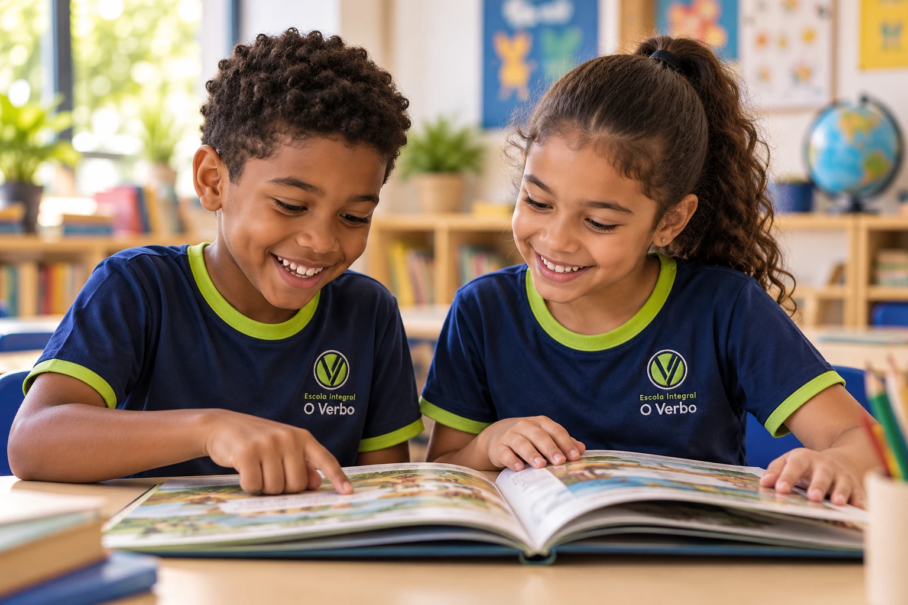
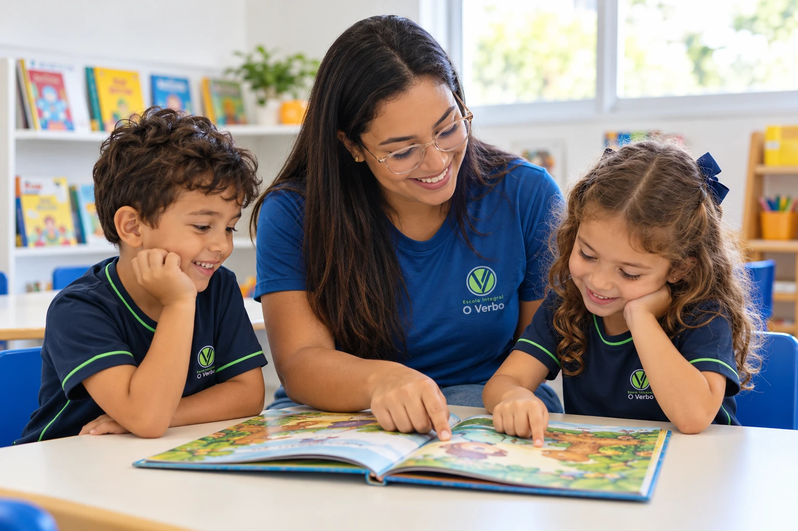

Um olhar para cada criança.
Respeitar os ritmos, valorizar as descobertas e construir relações de confiança.
ESCOLA CRISTÃ · FAROL, MACEIÓ
Uma infância acolhida. Um futuro com propósito.
Da Educação Infantil ao 5º ano, educação e valores cristãos caminham juntos.
Pequenas descobertas de hoje.
Grandes possibilidades para a vida.

RAÍZES FORTES. NOVAS DESCOBERTAS.
Escolher uma escola é escolher com quem dividir o cuidado pelo que você tem de mais precioso.
Na O Verbo, essa parceria começa com acolhimento. Desde 2015, nossa história é construída com educação, fé cristã e vínculos entre a escola e as famílias.
Vamos nos conhecer?Respeitar os ritmos, valorizar as descobertas e construir relações de confiança.
Fé, respeito, empatia e responsabilidade presentes na convivência e na formação.
Uma relação de diálogo para acompanhar cada nova etapa do desenvolvimento.
CADA FASE, UM NOVO MUNDO
Uma trajetória de aprendizagem que respeita a infância e acompanha as novas conquistas.
UMA ROTINA QUE FAZ SENTIDO
Cada família tem uma rotina. Conheça nossas opções de jornada e converse com a equipe sobre a melhor escolha para seu filho.
Uma opção para famílias que procuram a vivência escolar em parte do dia, com tempo para outras experiências fora da escola.
Consultar horários e disponibilidadeAprender também
é sentir que
pertence.

NOSSO DIA A DIA TEM VIDA
Aprendizado, cuidado e convivência.
Nossa escola e imagens ilustrativas da proposta.
APERTE O PLAY E CHEGUE MAIS PERTO
Depoimentos originais de famílias, com imagens ilustrativas nos trechos de apoio.
ESCOLHER COM TRANQUILIDADE
Ficou com alguma dúvida?
Nossa equipe está pronta para conversar.
A Escola O Verbo atende a Educação Infantil e o Ensino Fundamental I, até o 5º ano. Fale com a equipe para verificar as turmas e vagas disponíveis para a etapa da criança.
Sim. Há opções de jornada parcial, semi-integral e integral. A secretaria informa os horários, a rotina e as condições de cada modalidade conforme a turma.
A O Verbo é uma escola cristã evangélica. Sua proposta reúne educação, fé e valores como respeito, empatia e responsabilidade. Na visita, você pode conhecer mais sobre essa vivência.
Você pode ligar para (82) 3024-6212 ou preparar uma solicitação de visita pelo formulário abaixo. A equipe confirma os horários disponíveis e orienta sobre vagas, valores e documentos.
Durante a visita, converse com a equipe sobre a idade da criança, a jornada desejada, a alimentação e o processo de adaptação. Assim, vocês podem conhecer os detalhes aplicáveis à turma e às necessidades da família.
MATRÍCULAS 2027 · VAMOS NOS CONHECER?
Conheça os espaços, converse com a equipe e sinta de perto o jeito O Verbo de educar.
Rua Major Francisco de Barros Rêgo, 213
Farol · Maceió, AL · 57051-695